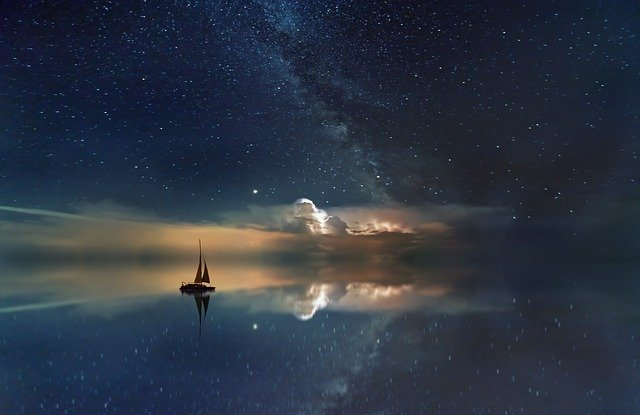

There might be many methods for all the different types of people ot there ro tackle this, but the one I found the most interesting was stargazing, it has always been fascinating to me. I especially like the fact that you can do it from anywhere in the world as long as it gets dark enough. It's a great activity to enjoy by yourself or even with other people and you don't even need to know about astronomy to enjoy it, it's up to you if you want to learn the names of the constellations or just feel yourself get swept away with the mesmerizing view thats right in front of you.
 I know a lot of people might not be on board with the idea of just laying on the ground and start gazing at the sky with no other purpose and that's ok, but just remember that it is also ok to give new ideas a try. In my experience there has been nothing more relaxing than staring at the sky whilst thinking to myself about anything and everything.
And of course gazing and talking with your friends is also allowed and stress relieving, finding the different constellations or just imagining all sorts of shapes, letting your imagination run wild, I love that feeling.
Anyway, this are just some random thoughts that I wanted to share with the world, I hope you enjoyed them and have a swell time stargazing in your own town.
If you're still unsure as to how to even begin to stargaze by yourself I advise you to read Shelby Brown's blog on the newest most popular apps on stargazing available for download at the moment: